Machine Learning for
Astroparticle Physics
A Crash-Course in Simulation-Based Inference
Lecture 4: Embedding networks and data compression
From raw observation \(x\) to a learned feature \(s_\psi(x)\) feeding \(q_\phi(\theta\mid s_\psi(x))\)
Christoph Weniger — University of Amsterdam (GRAPPA)
Today's Roadmap
From colour channels
to semantic channels
The operation, multiple
channels, kernels, ReLU, pooling
LeNet-5, ResNet,
skip connections
What do networks
actually learn?
Today we learn how convolutional layers exploit spatial structure to go from pixels to semantics.
Brief History — From Biology to Deep Learning
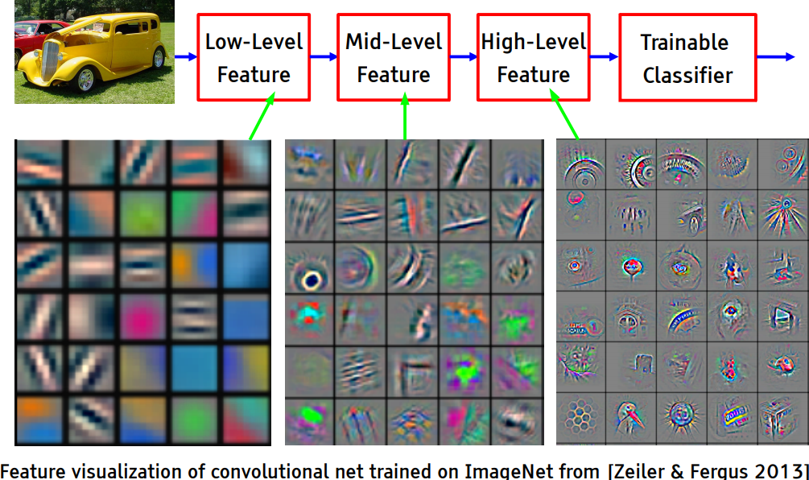
Hierarchical feature composition in CNNs.
- 1959–62 — Hubel & Wiesel discover hierarchical receptive fields in the visual cortex.
- 1980 — Fukushima's Neocognitron: first neural hierarchy for visual pattern recognition.
- 1986 — Rumelhart et al. introduce backpropagation for training multi-layer networks.
- 1990 — LeCun trains convolutional networks end-to-end on handwritten digits.
- 2012 — AlexNet wins ImageNet by a large margin → deep learning revolution.
↓ Scroll down for details on each milestone.
Visual Perception — Hubel & Wiesel, 1959–1962
- David Hubel and Torsten Wiesel discover the neural basis of visual perception.
- Awarded the Nobel Prize of Medicine in 1981 for their discovery.
- Key insight: neurons in the visual cortex respond to specific oriented edges within a local receptive field.
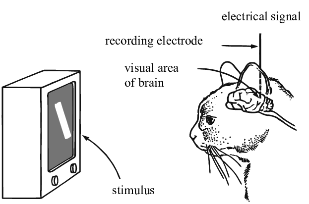
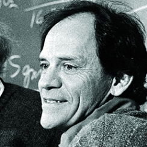
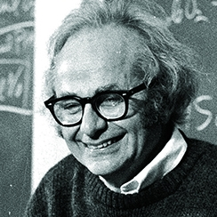
Receptive Fields — Hubel & Wiesel
Simple cells
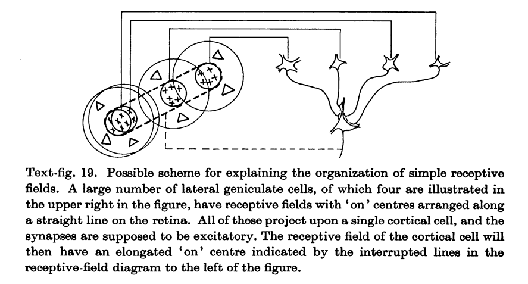
Complex cells
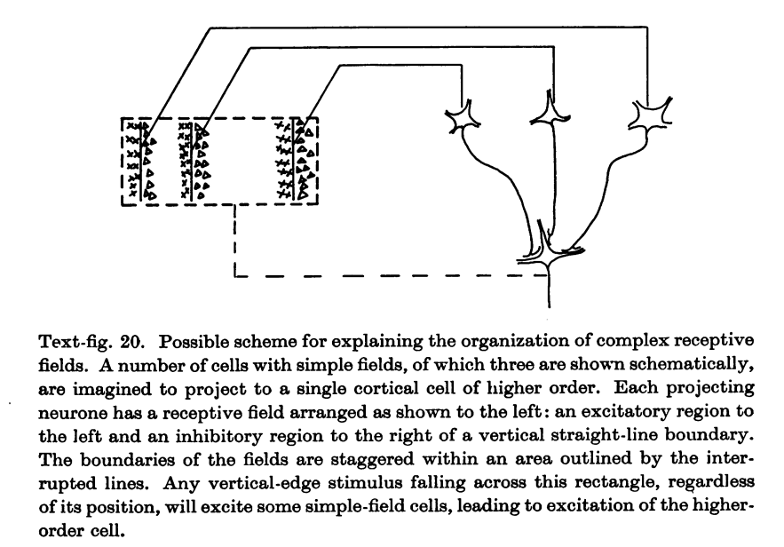
Credits: Hubel and Wiesel, Receptive fields, binocular interaction and functional architecture in the cat's visual cortex, 1962.
Neocognitron — Fukushima, 1980
- Fukushima proposes a direct neural network implementation of the hierarchy model of Hubel and Wiesel.
- Built upon convolutions and enables the composition of a feature hierarchy.
- Biologically-inspired training algorithm, which proves to be largely inefficient.
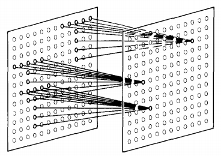
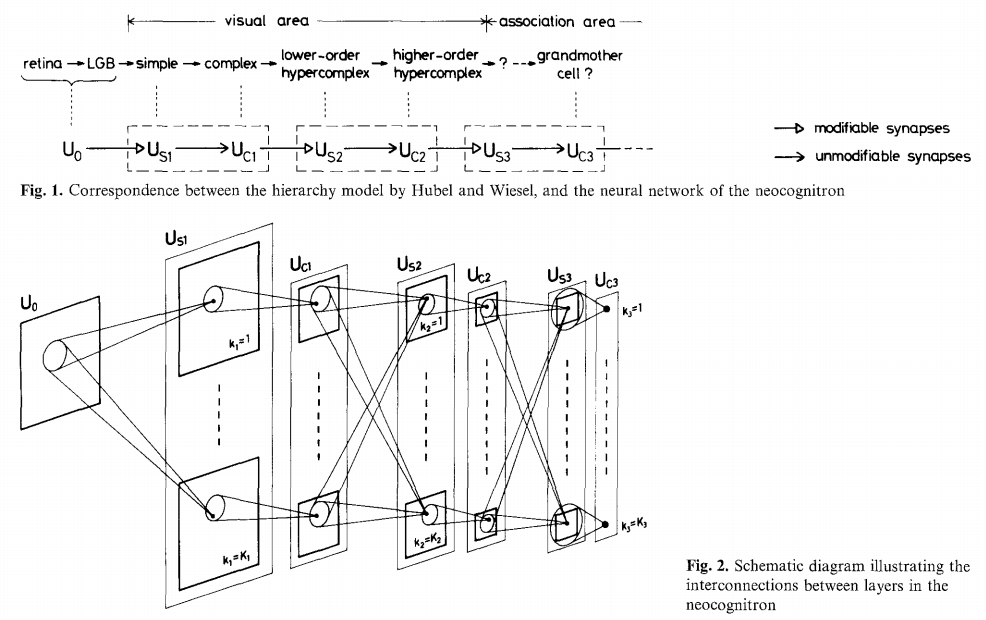
Feature hierarchy
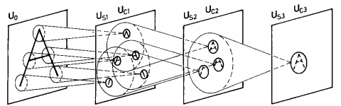
Credits: Kunihiko Fukushima, Neocognitron: A Self-organizing Neural Network Model, 1980.
Backpropagation — Rumelhart et al. 1986
- Rumelhart and Hinton introduce backpropagation in multi-layer networks with sigmoid non-linearities and sum of squares loss function.
- They advocate for batch gradient descent in supervised learning.
- Discuss online gradient descent, momentum and random initialization.
- Depart from biologically plausible training algorithms.
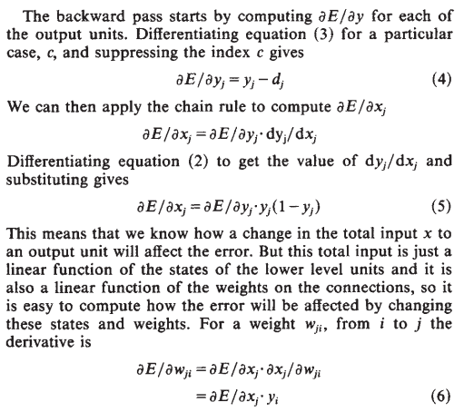
Credits: Rumelhart et al, Learning representations by back-propagating errors, 1986.
Convolutional Networks — LeCun, 1990
- LeCun trains a convolutional network by backpropagation.
- He advocates for end-to-end feature learning in image classification.
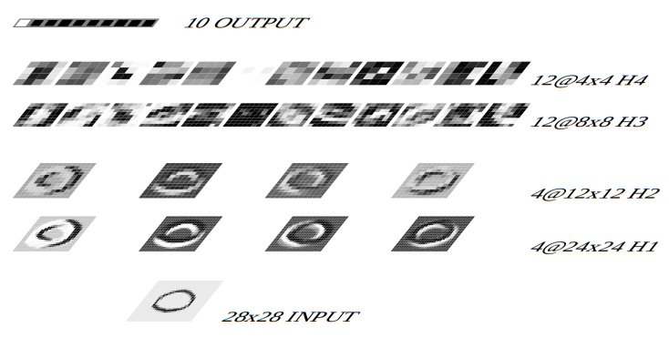
Credits: LeCun et al, Handwritten Digit Recognition with a Back-Propagation Network, 1990.
AlexNet — Krizhevsky et al. 2012
- Krizhevsky trains a convolutional network on ImageNet with two GPUs.
- 16.4% top-5 error on ILSVRC'12, outperforming all other entries by 10% or more.
- This event triggers the deep learning revolution.
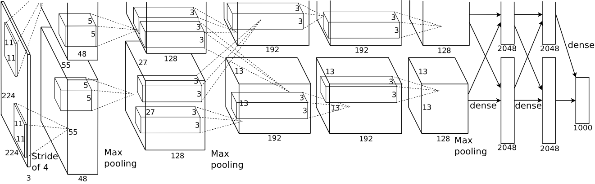
The Classification Problem
What we had (Lecture 3):
- Binary classification (2 classes)
- Low-dimensional input \(\mathbf{x} \in \mathbb{R}^d\)
- MLP → 1 logit → sigmoid → probability
- Binary cross-entropy loss
What we want now:
- \(K = 10\) classes (e.g. CIFAR-10: airplane, car, bird, …)
- Input: even tiny colour image \(\mathbf{x} \in \mathbb{R}^{3 \times 32 \times 32}\) — 3072 values!
- Network → \(K\) logits → softmax → class probabilities
- Multi-class cross-entropy loss
Softmax & Multi-Class Cross-Entropy
Softmax generalises the sigmoid to \(K\) classes:
\[p(y = k \mid \mathbf{x}) = \frac{e^{z_k}}{\sum_{j=1}^{K} e^{z_j}}\]where \(z_1, \ldots, z_K\) are the logits (raw network outputs).
Properties: \(p_k \geq 0\) and \(\sum_k p_k = 1\).
Multi-class cross-entropy loss:
\[E = -\frac{1}{N}\sum_{n=1}^{N} \log p(y = y_n \mid \mathbf{x}_n)\]Minimising this trains the network to assign high probability to the correct class.
The problem: an MLP on thousands or millions of flattened pixel color values has no notion of spatial structure. We need something before the MLP to extract features from images. That something is the convolutional neural network.
Convolution Operations
The core building block of CNNs.
What Is a Digital Image?
A colour image is a 3D tensor: 3 channels (Red, Green, Blue) × height × width. Each channel is a grayscale intensity map.
Shape in PyTorch: (batch, 3, H, W) — e.g. a 64×64 RGB image is (1, 3, 64, 64)
From Colour Channels to Semantic Channels
- An RGB image has 3 channels that encode colour at high spatial resolution. Each pixel is a mix of red, green, and blue.
- A CNN transforms these into many channels that encode learned semantic concepts (for instance edges, shapes, textures, or anything else useful) at lower resolution. This is the key idea behind convolutional neural networks.
- Above we show idealised examples. In CNNs semantics is distributed across many channels.
2D Convolution — The Basic Idea
A small kernel slides across the input. At each position: element-wise multiply, then sum.
2D Convolution — Multiple Input Channels
The kernel spans all input channels. At each position: multiply per channel, sum everything → one output value.
2D Convolution — Mathematical Definition
\(\mathbf{x} \in \mathbb{R}^{B \times C \times H \times W}\) (input), \(\mathbf{u} \in \mathbb{R}^{D \times C \times h \times w}\) (kernels), \(\mathbf{o} \in \mathbb{R}^{B \times D \times H' \times W'}\) (output)
\(B\) batch, \(C\) input channels, \(D\) output channels (number of kernels), \(h \times w\) kernel size
\(H' = H - h + 1\), \(W' = W - w + 1\) (without padding)
In PyTorch: nn.Conv2d(in_channels=C, out_channels=D, kernel_size=(h, w))
2D Convolutions — Full Picture
\(\mathbf{x} \in \mathbb{R}^{B \times C \times H \times W}\), \(\mathbf{u} \in \mathbb{R}^{D \times C \times h \times w}\), \(\mathbf{o} \in \mathbb{R}^{B \times D \times H' \times W'}\)
Here: \(B\) batch size, \(C{=}3\) input channels, \(D{=}2\) output channels / number of kernels, \(H{=}4, W{=}5\) input image size, \(h{=}w{=}3\) kernel size, \(H'{=}H{-}h{+}1{=}2, \; W'{=}W{-}w{+}1{=}3\) output image size
In PyTorch: conv = nn.Conv2d(in_channels=3, out_channels=2, kernel_size=3)
2D Convolutions — Kernel Explorer
- Each kernel has \(C \times h \times w\) parameters and produces one output channel — a feature map. Here \(C{=}h{=}w{=}3\).
- The kernel sums over all input channels → one scalar per position.
- ReLU(\(x\)) = max(0, \(x\)) discards negative responses — try it with a gradient kernel to select one edge direction.
- MaxPool 2×2 coarse-grains spatial information: keeps the strongest response in each 2×2 block, halving the resolution.
- The kernels here are just examples. In a CNN, kernels are learned — not hand-crafted.
Why ReLU?
What it does: ReLU(x) = max(0, x) — keeps positive values, sets negative to zero.
Each conv kernel responds positively and negatively. ReLU keeps only the positive activations → the kernel becomes a feature detector that fires when its pattern is present.
Why we need it: A convolution is a linear operation. Stacking linear layers gives another linear layer — no gain in expressiveness.
ReLU breaks the linearity. With nonlinearity between layers, deeper networks can represent increasingly complex features.
The building block: Conv → ReLU → Pool is the standard unit. Conv extracts, ReLU selects, Pool coarsens.
Max Pooling — Coarse-Graining Spatial Information
MaxPool 2×2 takes the maximum in each 2×2 block. Applied independently per channel. No learned parameters.
nn.MaxPool2d(2)
From Pixels to Semantics
CNNs trade spatial resolution for semantic richness: resolution goes down, abstraction goes up.
Each pixel is a 3-vector of colour intensities.
16 learned feature channels — edges, colour gradients, textures.
32 channels — compositions of edges become shapes and textures.
MLP maps the 2048-dim feature vector to 10 class scores.
Anatomy of a CNN: LeNet-5
LeNet-5 — Details
- Architecture: two convolution+pooling stages for feature extraction, followed by a 3-layer MLP for classification. Input: 1×28×28 grayscale image. Output: 10 class scores (digits 0–9).
- Dimension flow: 1×28×28 → Conv(5) → 6×24×24 → Pool(2) → 6×12×12 → Conv(5) → 16×8×8 → Pool(2) → 16×4×4 → flatten → 256 → FC → 120 → FC → 84 → FC → 10. The spatial dimensions shrink while the number of channels grows.
- Parameter count per layer: conv1: 156, conv2: 2,416, fc1: 30,840, fc2: 10,164, fc3: 850. Total: ~44k. Note that the vast majority of parameters are in the fully connected layers, not the convolutions.
- Why convolutions? A fully connected first layer on a 28×28 image would need 784×n parameters. Conv2d(1,6,5) achieves the same spatial coverage with only 156 parameters by exploiting weight sharing and locality.
- Historical note: LeNet-5 was designed for handwritten digit recognition (MNIST). It was one of the first successful deep CNNs and established the conv→pool→fc pattern still used today.
- Reference: LeCun et al., Gradient-Based Learning Applied to Document Recognition, Proc. IEEE 1998.
Modified Convolution Operations
Convolution operations can be modified in a few ways that are important for deep learning:
- The padding specifies the size of a zeroed frame added around the input. Useful to preserve spatial dimensions.
- The stride specifies a step size when moving the kernel. Useful to reduce spatial dimensions.
- The dilation expands the kernel support by inserting zeros between coefficients. Increases the receptive field without adding parameters.
↓ Scroll down for details on each.
Credits: Francois Fleuret, EE559 Deep Learning, EPFL; Dumoulin and Visin, 2016.
Padding
Padding is useful to control the spatial dimension of the feature map, for example to keep it constant across layers.
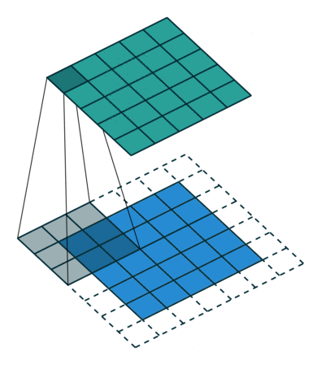
No padding
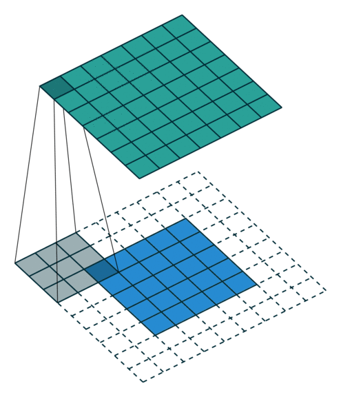
With padding

Same padding, no strides
Credits: Dumoulin and Visin, A guide to convolution arithmetic for deep learning, 2016.
Stride
Stride is useful to reduce the spatial dimension of the feature map by a constant factor.
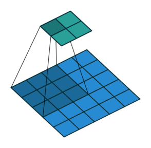

No padding, strides
Credits: Dumoulin and Visin, A guide to convolution arithmetic for deep learning, 2016.
Dilation
The dilation modulates the expansion of the kernel support by adding rows and columns of zeros between coefficients.
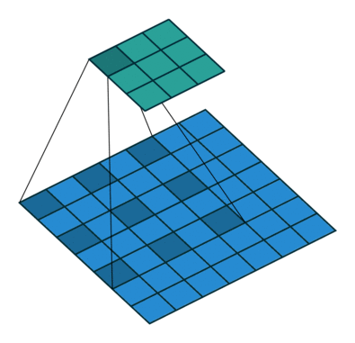
Having a dilation coefficient greater than one increases the unit's receptive field size without increasing the number of parameters.
Equivariance of Convolution Operations
A function \(f\) is equivariant to \(g\) if \(f(g(\mathbf{x})) = g(f(\mathbf{x}))\).
Parameter sharing used in a convolutional layer causes the layer to be equivariant to translation. If an object moves in the input image, its representation will move the same amount in the output.
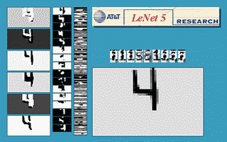
Credits: LeCun et al, Gradient-based learning applied to document recognition, 1998.
☕ Discussion
1 min think — 3 min discuss with neighbours — share with the group
1. In the demo, the CNN learned edge detectors in the first layer — without being told to. Why does this happen? What "forces" the network to learn edges rather than something else?
2. Our LeNet-5 has ~44k parameters. A modern ResNet has ~25 million. What do you think the extra parameters buy you? When would LeNet-5 be enough?
Bonus: We added noise with σ = 0.5 to the training images. Would the CNN still work if we trained on clean images but tested on noisy ones? Why or why not?
Building Convolutional Neural Networks
Architectures, depth, and interpretation.
Putting It Together — Convolutional Neural Networks
A convolutional network is generically defined as a composition of convolutional layers (CONV), pooling layers (POOL), linear rectifiers (RELU) and fully connected layers (FC).
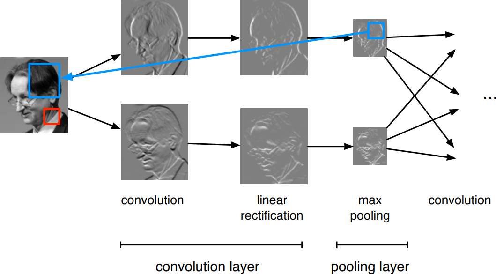
CNN Architectures
The most common convolutional network architecture follows the pattern
INPUT → [[CONV → RELU]*N → POOL?]*M → [FC → RELU]*K → FC
*indicates repetition,POOL?indicates an optional pooling layer,FCis a fully connected (nn.Linear) layer- \(N \geq 0\) (usually \(N \leq 3\)), \(M \geq 0\), \(K \geq 0\) (usually \(K \leq 2\))
- the last fully connected layer holds the output (e.g., the class scores)
Examples:
- INPUT → FC (linear classifier, \(N\!=\!M\!=\!K\!=\!0\))
- INPUT → [FC → RELU]*K → FC (K-layer MLP)
- INPUT → [CONV → RELU → POOL]*2 → FC → RELU → FC
- INPUT → [[CONV → RELU]*2 → POOL]*3 → [FC → RELU]*2 → FC
ResNet — He et al., 2015
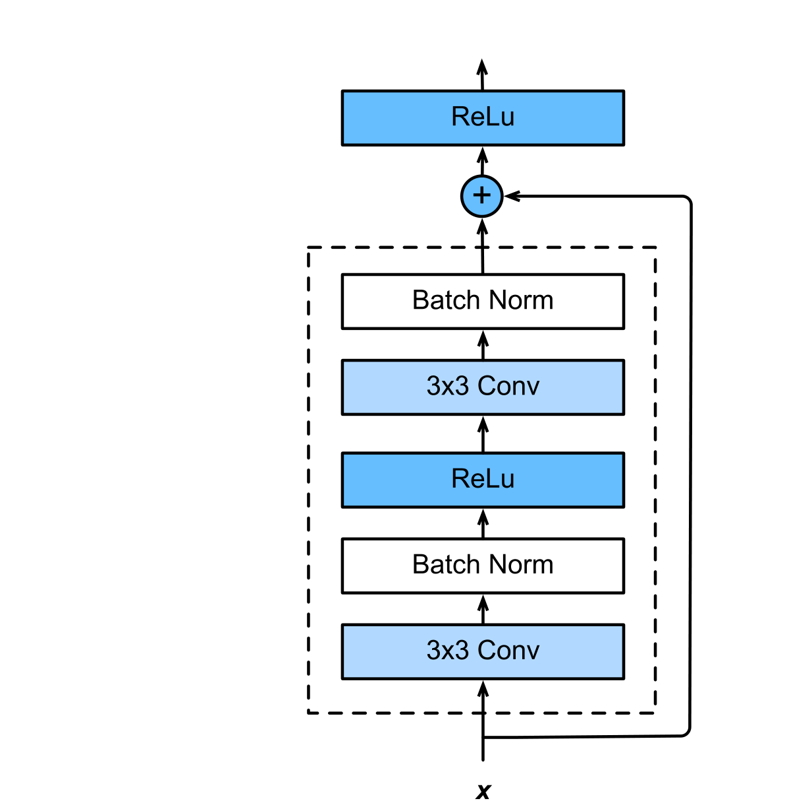
A residual block with skip connection.
Very deep networks (up to 152 layers) made possible by residual blocks.
The skip connection adds the input directly to the output: \(f(\mathbf{x}) = \mathbf{x} + g(\mathbf{x})\).
The network only needs to learn the residual \(g(\mathbf{x})\). If \(g \approx 0\), the block acts as identity — adding more layers can never hurt.
Why it matters: without skip connections, very deep networks suffer from vanishing gradients. The skip path lets gradients flow directly through, enabling training of 100+ layer networks.
Credits: Dive Into Deep Learning, 2020.
Architecture Zoo — Historical Evolution
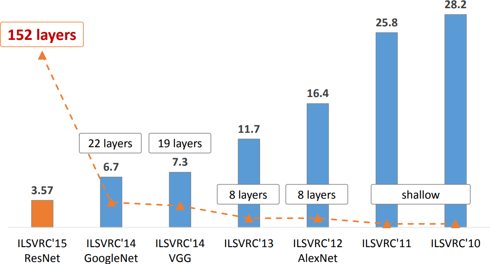
Top-5 error on ImageNet vs time and network depth. Deeper networks with skip connections dominate.
↓ Scroll down for individual architectures.
AlexNet — Krizhevsky et al., 2012
Composition of 8-layer CNN (with kernel sizes up to 11) with a 3-layer MLP. The number of parameters in AlexNet is 1000 times larger than in LeNet.
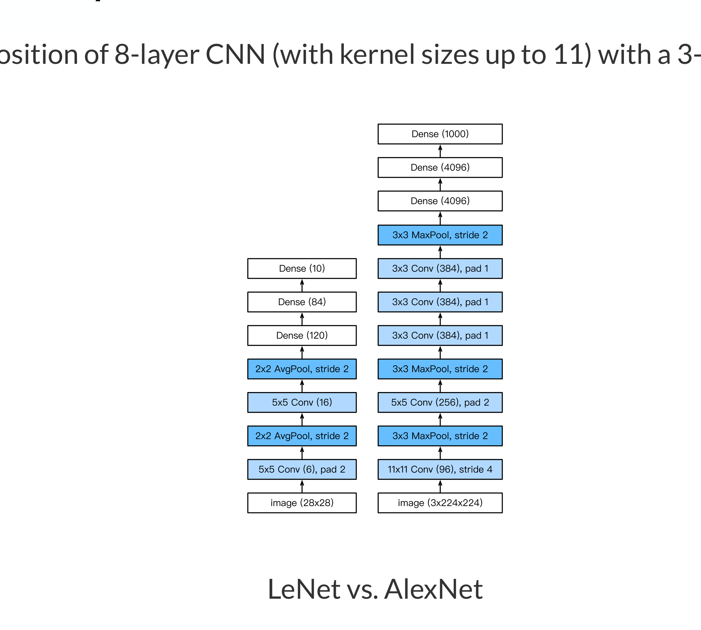
Credits: Dive Into Deep Learning, 2020.
VGG — Simonyan and Zisserman, 2014
Composition of 5 VGG blocks consisting of CONV + POOL layers, followed by fully connected layers. Network depth increased up to 19 layers, while the kernel sizes reduced to 3.
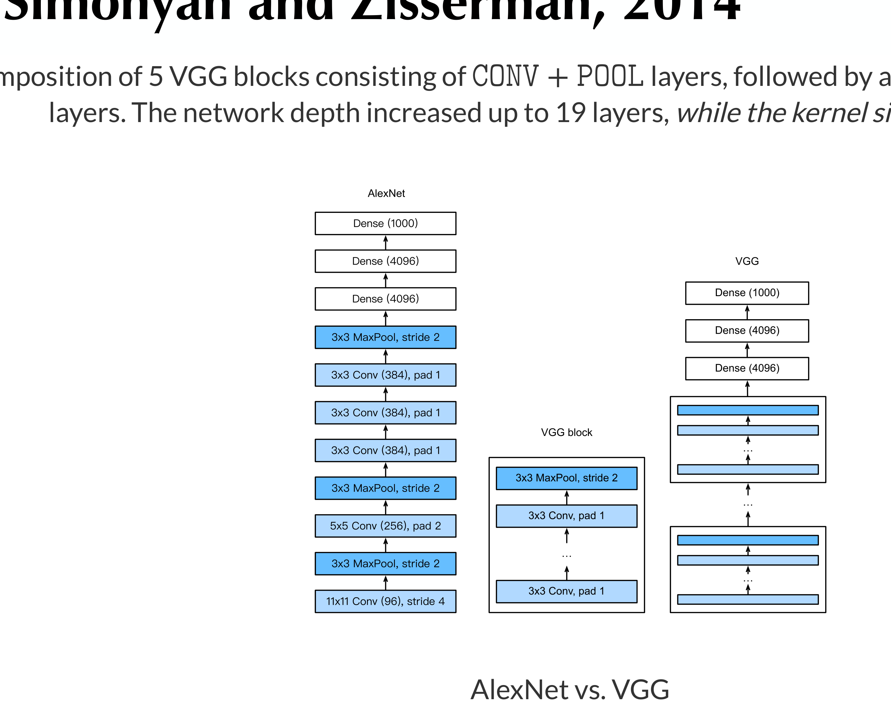
Credits: Dive Into Deep Learning, 2020.
Effective Receptive Field
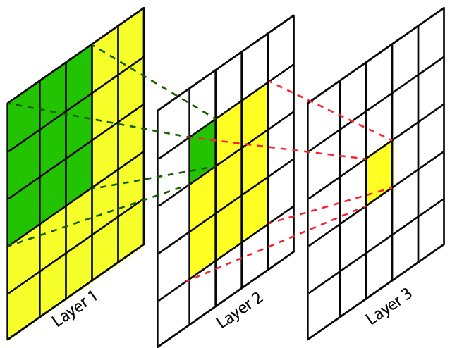
The effective receptive field is the part of the visual input that affects a given unit indirectly through previous convolutional layers. It grows linearly with depth.
E.g., a stack of two \(3 \times 3\) kernels of stride 1 has the same effective receptive field as a single \(5 \times 5\) kernel, but fewer parameters.
Interpreting CNNs
What do convolutional networks learn?
Under the Hood — Overview
Understanding what is happening in deep neural networks after training is complex and the tools we have are limited.
In the case of convolutional neural networks, we can look at:
- the network's kernels as images
- internal activations on a single sample as images
- distributions of activations on a population of samples
- derivatives of the response with respect to the input
- maximum-response synthetic samples
Credits: Francois Fleuret, EE559 Deep Learning, EPFL.
Visualising Kernels
LeNet, Layer 1 — first convolutional layer, all filters:
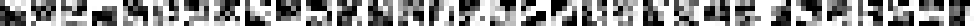
LeNet, Layer 2 — second convolutional layer, first 32 filters:
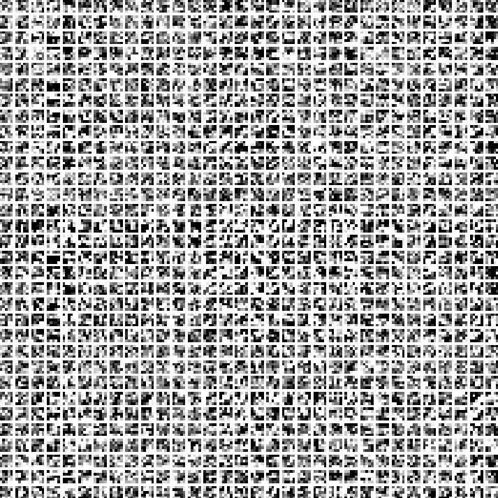
AlexNet, Layer 1 — first convolutional layer, first 20 filters:
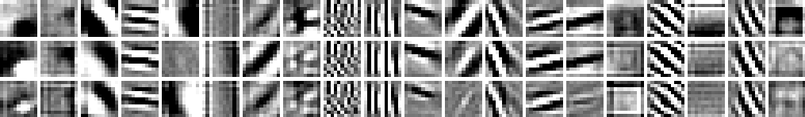
Credits: Francois Fleuret, EE559 Deep Learning, EPFL.
Maximum Response Signals — What Does a Neuron "Want to See"?
Goal: find the input image \(\mathbf{x}\) that makes a specific neuron (at layer \(\ell\), channel \(d\)) fire as strongly as possible.
Step 1: Start from random noise:
\(\quad \mathbf{x}_0 \sim U[0, 1]^{C \times H \times W}\)
Step 2: Define objective — how strongly does neuron \((\ell, d)\) respond?
\(\quad \mathcal{L}_{\ell,d}(\mathbf{x}) = ||\mathbf{h}_{\ell,d}(\mathbf{x})||_2\)
Step 3: Gradient ascent on the image (not the weights!):
\(\quad \mathbf{x}_{t+1} = \mathbf{x}_t + \gamma \,\nabla_{\mathbf{x}} \mathcal{L}_{\ell,d}(\mathbf{x}_t)\)
After many iterations, \(\mathbf{x}\) converges to a synthetic image showing what that neuron has learned to detect.
Key insight: during training we optimise weights to minimise loss. Here we freeze the weights and optimise the input image to maximise activation.
What we expect:
- Early layers → edges, colours, gradients
- Middle layers → textures, patterns
- Deep layers → object parts, shapes
Confirms the "pixels to semantics" story!
Hierarchical Composition of Features
- The first layers appear to encode direction and colour.
- The direction and colour filters get combined into grid and spot textures.
- These textures gradually get combined into increasingly complex patterns.
The network appears to learn a hierarchical composition of patterns.
Credits: Zeiler & Fergus 2013.
DeepDream — Pushing It to the Extreme
The same gradient ascent technique, applied to maximise activations across an entire network on a real image.
The network hallucinates the features it has learned — eyes, faces, animal parts — into the image.
Summary
Images = 3 colour channels.
CNNs turn these into many
semantic channels.
Learned kernels slide across
all channels. Conv → ReLU →
MaxPool is the building block.
LeNet-5: the basic pattern.
ResNet: skip connections
enable very deep networks.
Early layers: edges, colours.
Deep layers: shapes, objects.
Pixels → semantics, confirmed.
Next: hands-on — build a CNN from scratch in PyTorch (Exercise Sheet 3).